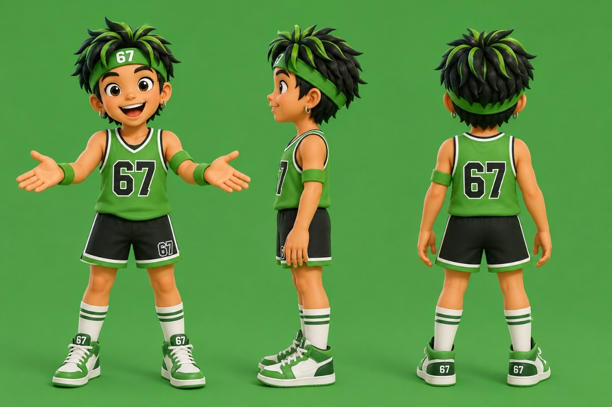
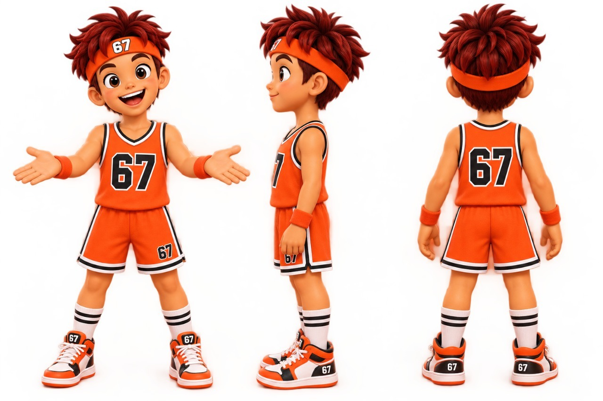
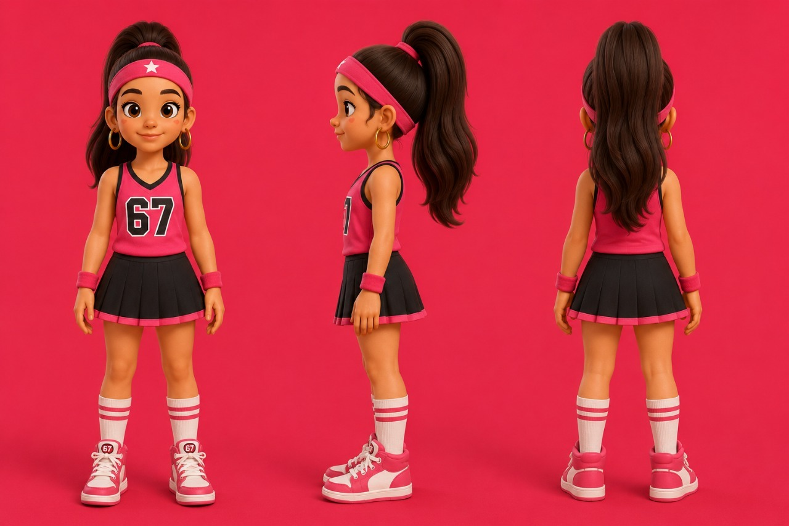
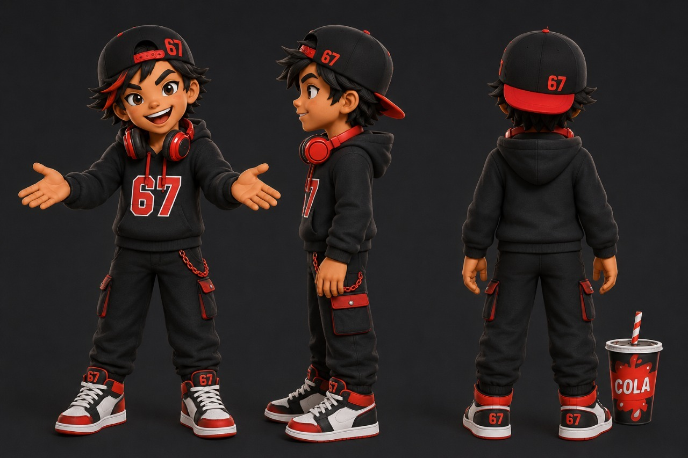
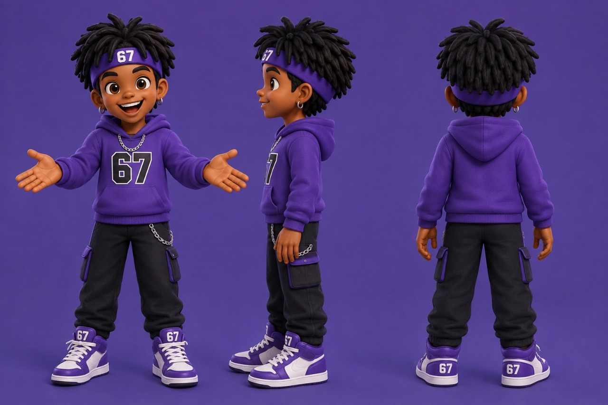
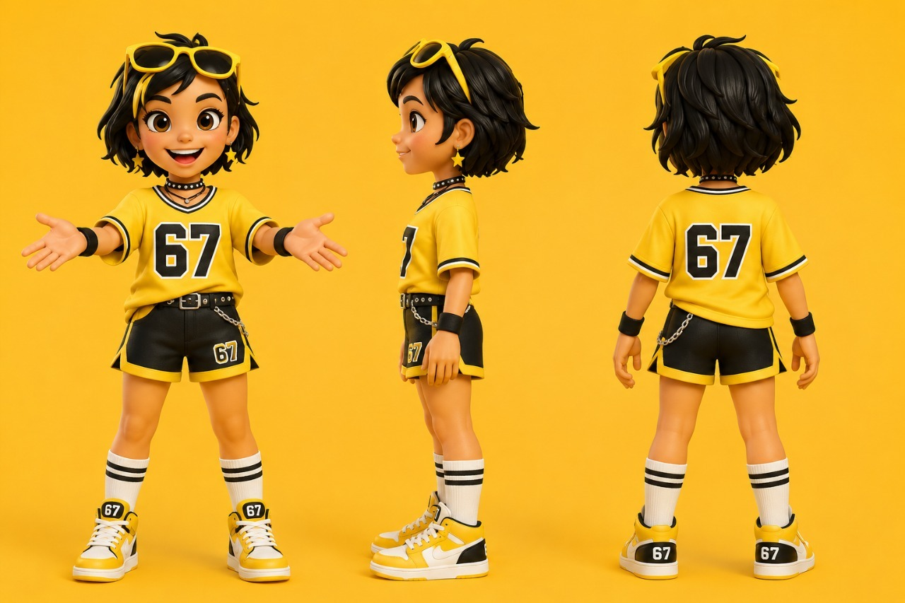

Six Seven: какие шесть вкусов и шесть героев в линейке?
Коротко
Six Seven — леденцы на палочке весом 6 г в шести вкусах: яблоко, апельсин, клубника, кола, виноград и лимон. У каждого вкуса свой герой, свой цвет и своя форма, поэтому линейка узнаётся и на полке, и на прикассовой стойке. Красители и ароматизаторы в леденцах — натуральные.

Что такое Six Seven?
Six Seven — бренд леденцов на палочке, построенный вокруг числа «67». Это выражение в 2025 году стало одним из самых узнаваемых мемов среди детей и подростков, а Dictionary.com выбрал его словом года.
Произносится название так же, как мем: «сикс-севен», по-английски six seven. Dictionary.com отдельно подчёркивает, что число говорят двумя цифрами, а не «шестьдесят семь».
Масштаб мема хорошо виден по данным словаря: с июня 2025 года число поисковых запросов «67» выросло более чем в шесть раз.
Линейка создана для дистрибьюторов, торговых сетей и точек продаж у кассы. Идея простая: покупателю не нужно объяснять, что значит число на упаковке. Его знают по видео и разговорам со сверстниками.
Почему линейка продаётся?
У Six Seven четыре основных аргумента для партнёров.
Спрос уже создан мемом. «67» — слово 2025 года по версии Dictionary.com. Покупателю не нужно объяснять, зачем эта конфета: он уже слышал это число.
Цена подтверждена рынком. Ближайший натуральный аналог в аптеках Казахстана стоит 135–240 ₸ за штуку. Рекомендованная цена Six Seven на полке — 200 ₸, то есть в пределах этого диапазона.
Леденцы уже на полках. Они продаются в аптечных сетях Казахстана, и каждая точка получает стойку с героями на кассу.
Натуральный состав. Красители и ароматизаторы натуральные — это важно для аптек и для родителей.
Подробно о самом меме — в статье что значит «67» и откуда взялся мем.
Какие вкусы есть в линейке?
В линейке шесть вкусов. У каждого — собственный цвет, по которому его легко найти на стойке:
- Яблоко — зелёный;
- Апельсин — оранжевый;
- Клубника — малиново-розовый;
- Кола — чёрный с красным;
- Виноград — фиолетовый;
- Лимон — жёлтый.
Цвет вкуса повторяется в оформлении героя: в одежде, аксессуарах и обуви. Благодаря этому вкус считывается ещё до того, как покупатель прочитает название.
Кто такие шесть героев?
Каждому вкусу соответствует свой персонаж. Все герои одеты в спортивном уличном стиле и носят номер 67 — на майке, худи или кепке.
Для каждого героя подготовлено изображение в трёх ракурсах: спереди, сбоку и сзади. Ниже — короткое описание каждого.
Какой герой у вкуса «Яблоко»?

Мальчик с торчащими чёрно-зелёными волосами и зелёной повязкой с номером 67. На нём зелёная баскетбольная майка, чёрные шорты и бело-зелёные кроссовки.
Какой герой у вкуса «Апельсин»?

Мальчик с рыжими взъерошенными волосами и оранжевой повязкой. Оранжевая баскетбольная форма с номером 67, напульсники и высокие носки в полоску.
Какой герой у вкуса «Клубника»?

Девочка с длинным тёмным хвостом и розовой повязкой со звездой. Розовая майка с номером 67, чёрная плиссированная юбка и розовые кроссовки.
Какой герой у вкуса «Кола»?

Мальчик в чёрной кепке козырьком назад, с красными наушниками на шее. Чёрное худи с красным номером 67, карго-брюки и стакан с надписью COLA.
Какой герой у вкуса «Виноград»?

Мальчик с дредами и фиолетовой повязкой с номером 67. Фиолетовое худи с цепочкой, чёрные брюки и фиолетово-белые кроссовки.
Какой герой у вкуса «Лимон»?

Девочка с короткими чёрными волосами и жёлтыми солнцезащитными очками на голове. Жёлтая футболка с номером 67, чёрные шорты и серьги-звёздочки.
Почему у каждого вкуса свой герой?
Герой делает вкус запоминающимся: у каждого леденца есть не только название и цвет, но и узнаваемый персонаж.
На полке и на стойке линейка читается с трёх метров: шесть ярких цветов и шесть персонажей выделяются среди соседних товаров. Это важно в прикассовой зоне, где решение о покупке принимается за секунду.
Из чего сделаны леденцы?
Красители и ароматизаторы в леденцах Six Seven — натуральные. Это аргумент и для аптек, и для родителей, которым важно, что ребёнок берёт в рот.
Какой формат и какая цена?
Основные параметры линейки:
- леденец на палочке весом 6 г;
- 6 вкусов в линейке;
- 1 200 штук в коробе.
Рекомендованная цена на полке — 200 ₸, не ниже 170 ₸. Цена единая во всех каналах, чтобы точки продаж не демпинговали друг другу.
Для сравнения: ближайший натуральный аналог в аптеках Казахстана стоит 135–240 ₸ за штуку.
Оптовая цена зависит от канала и объёма. Прайс готовится под конкретную точку или сеть.
Где продаются леденцы и как их выкладывать?
Леденцы Six Seven уже продаются в аптечных сетях Казахстана. Каждая точка получает стойку с героями на кассу.
Есть два варианта POS-стойки: малая на 12 ячеек и большая на 18. Условия размещения согласуются при заявке.
Стойка с героями ставится прямо на кассу — туда, где покупатель принимает решение за секунду и где линейка видна каждому, кто стоит в очереди.
Линейка подходит для разных каналов: аптеки, АЗС, магазины у дома, минимаркеты, детские пространства, HoReCa и дистрибьюторы.
Как стать партнёром Six Seven?
Условия зависят от канала и объёма. Общие для всех партнёров правила — формат, единая рекомендованная цена и стойка для кассы — описаны выше.
Работа строится в четыре шага:
- Вы оставляете заявку: коротко, кто вы и сколько у вас точек.
- Получаете прайс и условия под ваш канал.
- Пилотная поставка и стойка на кассу.
- Дозаказ по мере продаж.
Оставить заявку и получить прайс можно на главной странице Six Seven.